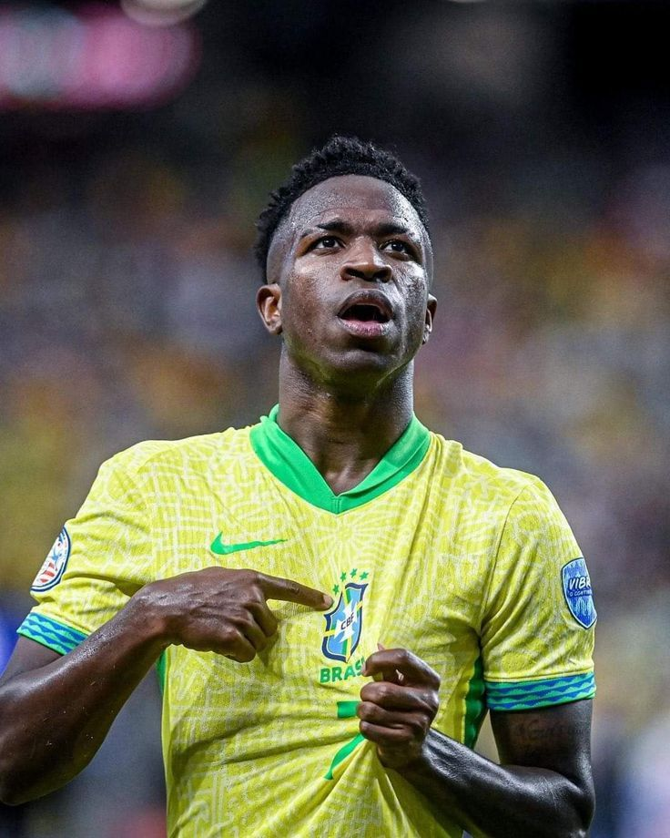

02/07/2026
Vini Jr. projeta duelo decisivo contra a Noruega: "Estamos prontos"
O atacante vive seu melhor momento na Copa do Mundo de 2026 e garante foco total para avançar às quartas de final.
Leia mais →